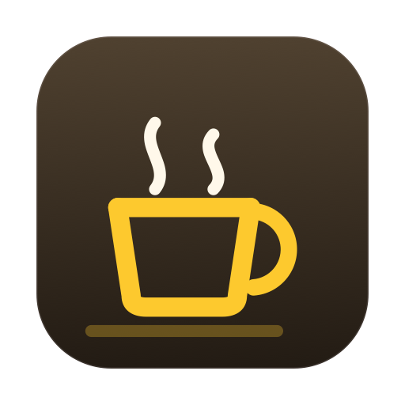

Free · macOS 14+Your Mac shouldn't sleep through a render, a build, or a long download — and it shouldn't stay awake all night afterwards either. WakeHold watches what's actually running and decides for you.
The usual options are "never sleep" and "sleep on a timer". Neither knows whether your export finished ten minutes ago or is still going.
You come back to a render that stopped at 40% because the idle timer won.
You left caffeinate running on Friday and found a flat battery on Monday.
"Sleep after 3 hours" is a guess that is wrong in both directions.
The same counters Activity Monitor shows, read a few times a minute.
Recognises 38 apps across video, downloads, AI agents, development and sync, each with sensible thresholds. Anything unknown still counts if it is genuinely busy.
Two lists — staying awake for, and not watching. Click any app to move it between them. A VM that is always busy never holds your Mac awake again.
One-time admin approval, and a watchdog that restores normal sleep within seconds if it ever stops.
Stops holding below a threshold you set, and respects Low Power Mode. Never applies to desktops.
Only system sleep is held. Your display still goes dark on its own schedule — unless you would rather it did not.
Well under 1% of one core. It is reading counters, not doing work.
Only activity counters — the same numbers Activity Monitor displays.
It reads how much CPU, disk and network each process used. Not what any of them were doing.
Ships without the network entitlement. It cannot open a connection even by accident.
Nothing to sign up for, nothing to verify. It is free.
No telemetry, no crash reporting, no update pings.
 WakeHold
WakeHold